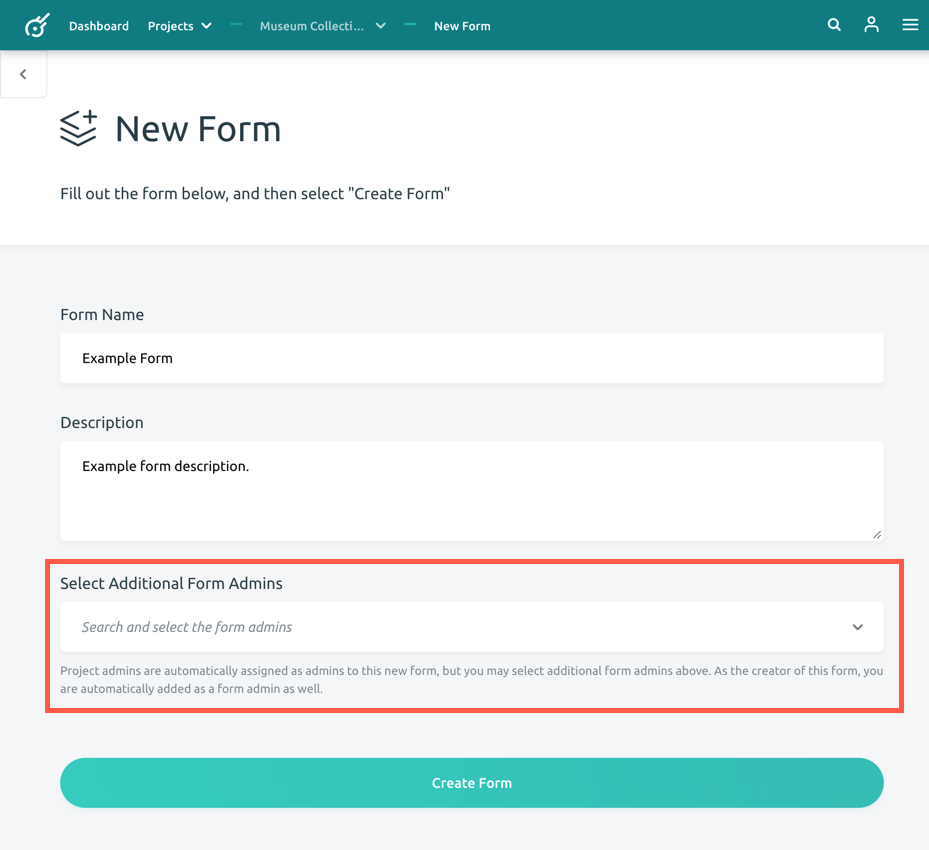

Creating a Form
A form is the mechanism by which you are able to generate records. It is similar to a form that you would fill out to catalog an artifact or object. It can contain multiple pages and various input fields. A form will determine the types of metadata that is generated for a project. Each project can have multiple forms depending on the types of objects you are recording or who your target audience(s) are. For example, you may have a form for text-based artifacts (such as archival documents) and another for physical objects.
Follow the steps below to create a form.
-
Open your current project (You can find the list of your projects by clicking on the Projects button on the top menu).
-
Click the Create a New Form button. This button is located below the description of your repository. This will bring you to a New Form page.
-
Enter the name of your form under Form Name. This is a required field. For example: Artifact, Document, and Media can all be form names.
-
Enter the form's description within the blank text area under Description. This is where you describe the purpose of this form. You are limited to a maximum of 500 characters.
-
After you are finished filling out the page, click the Create Form button. This will create and then bring you to your form.

Note: At the bottom of this page you may also select any additional form adminstrators, individuals that will be able to modify the form you are creating. Administrators that are already a part of your project are automatically added (including yourself). Adding additional people will allow non-project adminstrator individuals to be able to modify this form. You can choose individuals from the dropdown menu, or you can type in a name to search the list. For more information, visit the Additional Form Administrators Guide.